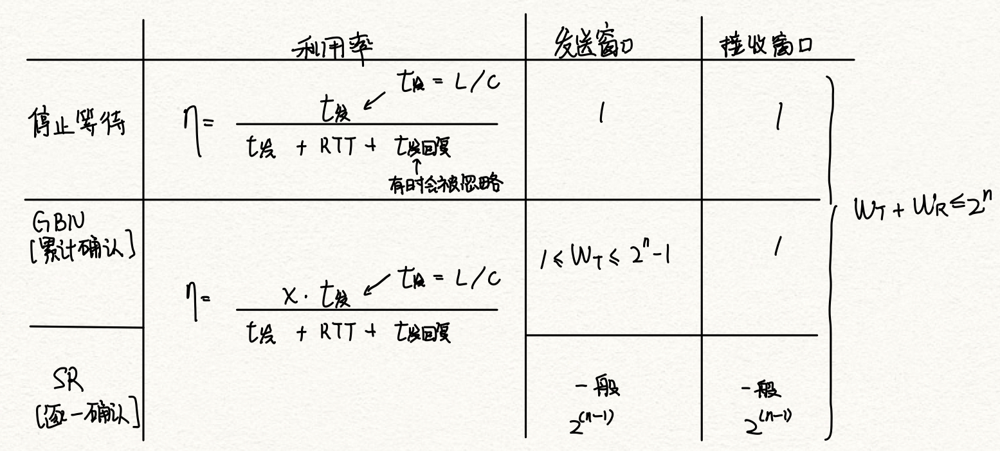
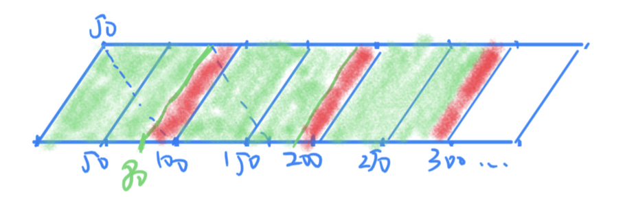
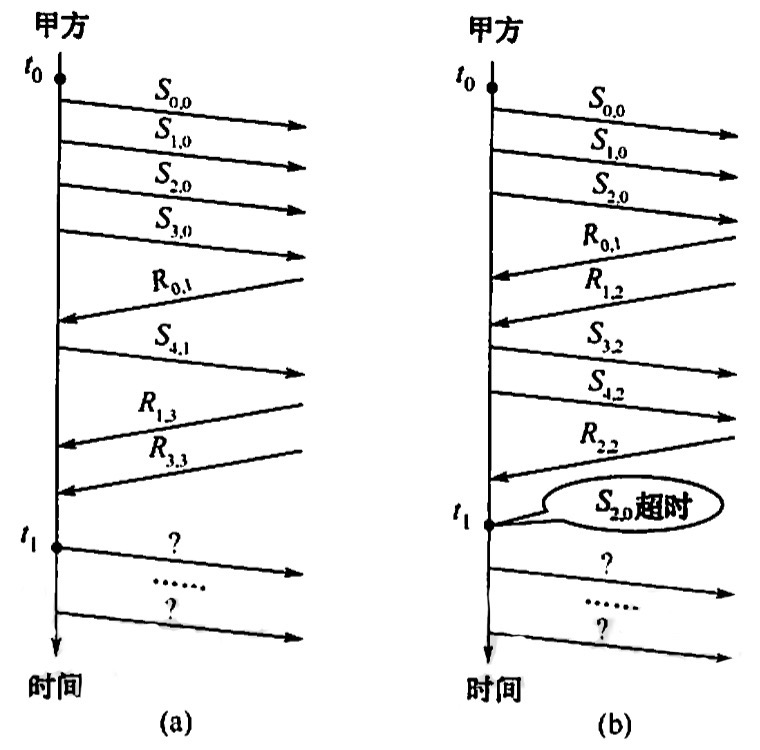

2022.08.13
[toc]
资料：
累计确认
接收方只能按序接受
窗口大小 $$ 1≤W_T≤2^n-1 $$
选择重传ARQ协议；错误传NAK（否定帧）
窗口大小（用nbit对帧编号） $$ W_T+W_R≤2^n\ W_T=W_R=2^{n-1} $$
链路层流量控制：接受方式不下就丢弃
传输层流量控制：接受端返回发送方一个窗口公告
要重发的“帧数”不是“帧的序号”
小结

【窗口的定义】 对于窗口大小为n的滑动窗口, 最多可以有( )帧已发送但没有确认 答案：n-1。窗口大小是指2^k=n，发送窗口大小最大=窗口大小-1
【2012统考真题】两台主机之间的数据链路层采用后退N帧协议(GBN)传输数据,数据传输速率为16kb/s,单向传播时延为270ms,数据帧长度范围是128~512字节,接收方总是以与数据帧等长的帧进行确认。为使信道利用率达到最高,帧序号的比特数至少为(B)
A.5
B.4
C.3
D.2
信道利用率最高，在发送某种帧一定量的情况下达到某吞吐量，为了达到吞吐量，要考虑最坏的情况——全是128B帧。 $$ \begin{align} t_{双方发}&=2\frac{128\cdot 8b}{16kb/s}=128ms\ RTT&=540ms\ T&=668ms\ N&=\frac{668ms}{64ms}=10.4375\to11\ N&=2^n-1\to n≥4
\end{align*} $$
A. 10Mb/s
B. 20Mb/s
C. 80Mb/s
D. 100Mb/s

$$ \begin{align} t_{发}&=\frac{8000b}{100Mb/s}=80\mu s\ t_{发全部窗口}&=80ms\ RTT&=100ms\ c&=100Mb/s\cdot 80\%=80Mb/s \end{align} $$A.3
B.4
C.7
D.8 $$ \begin{align} t_{发1个}&=\frac{8000b}{128kb/s}=62.5ms\ T&=t_{发1个}+RTT=562.5ms\ N&=\frac{562.5}{62.5}\cdot 0.8=7.2\ N&≤2^n-1\to n≥4 \end{align} $$
A.240比特
B.400比特
C.480比特
D.800比特 $$ \begin{align} t&=\frac{Lb}{3kb/s}=\frac{L}{3}ms\ T&=\frac{L}{3}+400ms\ 0.4&=\frac{\frac{L}{3}}{\frac{L}{3}+400}\to L=800b \end{align} $$
A.2 B.3 C.4 D.5 $$ \begin{align} 2^3-5=3 \end{align} $$
A.80%
B.66.7%
C.44.4%
D.40% $$ \begin{align} t_{发}=t_{回}&=\frac{8000b}{10kb/s}=0.8s\ \eta&=\frac{0.8s}{1.6s+0.4s}=40\% \end{align} $$
为达到传输的最大效率采用GBN协议！ $$ \begin{align} t_{1}&=\frac{2000b}{100kb/s}=20ms\ T&=520ms\ N&=520/20=26\ N&≤2^n-1\to n≥5\ \eta &= \frac{20\cdot\min(26,31)}{520}=100\% \end{align} $$
坑：虽然是捎带确认，往返的都是数据帧，但是分母还是一个RTT😭，原来返回来的数据帧是确认的意义，所以对于前一个数据帧也算成确认帧发送时间的一部分
$$ \begin{align} t_1=\frac{1kb}{50kb/s}=20ms\ \eta=\frac{20ms}{20\cdot 2ms+540ms}=3.45\% \end{align} $$ 2)后退N帧协议。 $$ \begin{align} N_{max}&=2^3-1=7\ \eta&=\frac{7\cdot20}{20\cdot 2+540}=24.14\% \end{align} $$ 3)选择重传协议(假设发送窗口和接收窗口相等) $$ \begin{align} N_{max}&=2^{3-1}=4\ \eta&=\frac{4\cdot20}{20\cdot 2+540}=13.79\% \end{align} $$
对于下列给定的值,不考虑差错重传,非受限协议(无须等待应答)和停止等待协议的有效数据率是多少?(即每秒传输了多少真正的数据,单位为b/s
R=传输速率(16Mb/s)
S=信号传播速率(200m/us)
D=接收主机和发送主机之间传播距离(200m)
T=创建帧的时间(2μs)
F=每帧的长度(500bit)
N=每帧中的数据长度(450bit)
A=确认帧ACK的帧长(80bit)
非受限协议:不用加传输时延了😭 $$ \begin{align} T_{发数据}&=\frac{450b}{16Mb/s}=28.125\mu s\ T_{发送端}&=\frac{500b}{16Mb/s}=31.25\mu s\ T_{传输}&=\frac{200m}{200m/\mu s}=1\mu s\ T_{创建}&=2\mu s\ \eta &= \frac{28.125}{31.25+2+0[不用加传输时延了,没有确认帧]}\ c &= \eta\cdot16Mb/s=13.53Mb/s \end{align} $$
停止等待协议: $$ \begin{align} T_{发数据}&=\frac{450b}{16Mb/s}=28.125\mu s\ T_{发送端}&=\frac{500b}{16Mb/s}=31.25\mu s\ T_{接受端}&=\frac{80b}{16Mb/s}=5\mu s\ RTT&=\frac{400m}{200m/\mu s}=2\mu s\ T_{创建}&=4\mu s\ \eta &= \frac{28.125}{31.25+5+2+4}\ c &= \eta\cdot16Mb/s=10.65Mb/s \end{align} $$
在某个卫星信道上,发送端从一个方向发长度为512B的帧,且发送端的数据发送速率为64kb/s,接收端在另一端返回一个很短确认帧。设卫星信道端到端的单向传播延时为270ms,对于发送窗口尺寸分别为1、7、17和117的情况,信道的吞吐率分别为多少? $$ \begin{align} t_1&=\frac{512\cdot8b}{64kb/s}=64ms\ \eta&=\frac{[1,7,17,117]\cdot64ms}{64ms+540ms}=[10.60\%,74.17\%,100\%,100\%]\ c&=\eta\cdot c_0=[6.78kb/s,47.47kb/s,64kb/s,64kb/s] \end{align} $$
【2017统考真题】甲乙双方均采用后退N帧协议(GBN)进行持续的双向数据传输,且双方始终采用捎带确认,帧长均为1000B, $$S_{x,y}和R_{x,y}$$分别表示甲方和乙方发送的数据帧,其中x是发送序号,y是确认序号(表示希望接收对方的下一帧序号),数据帧的发送序号和确认序号字段均为3比特。信道传输速率为100Mb/s,RTT=0.96ms。下图给出了甲方发送数据帧和接收数据帧的两种场景,其中$t_0$为初始时刻,此时甲方的发送和确认序号均为0,1时刻甲方有足够多的数据待发送
请回答下列问题

1)对于图(a),t0时刻到t1时刻期间,甲方可以断定乙方已正确接收的数据帧数是多少?正确接收的是哪几个帧(请用S形式给出)? $$ \begin{align} GBN\to累计确认\ 收到了R_{3,3}\to乙希望收到3\ 正确接受3个:S_{0,0},S_{1,0},S_{2,0} \end{align} $$
2)对于图(a),从t1时刻起,甲方在不出现超时且未收到乙方新的数据帧之前,最多还可以发送多少个数据帧?其中第一个和最后一个帧分别是哪个(请用$$S_{x,y}$$形式给出)? $$ \begin{align} &N=2^3-1=7\ &\to 0√,1√,2√,[3?,4?,5,6,7,0,1],2,3,4,5...\ &?:待确认\ &√:已确认\ &还可以发7-2=5个\ &第一个是:S_{5,2}\ &最后一个:S_{1,2} \end{align} $$
3)对于图(b),从t1时刻起,甲方在不出现新超时且未收到乙方新的数据帧之前,需要重发多少个数据帧?重发的第一个帧是哪个帧(请用$$S_{x,y}$$形式给出) $$ \begin{align} 甲发送窗口:0√,1√,[2?,3?,4?,5,6,7,0],1,2,3...\ 重新发送3个,重发的是已经发过的234,第一个是:S_{2,3} \end{align} $$
4)甲方可以达到的最大信道利用率是多少? $$ \begin{align} t_1&=\frac{8kb}{100Mb/s}=80\mu s\ \eta&=\frac{7\cdot 80\mu s}{2\cdot 80\mu s+960ms}=50.45\% \end{align} $$